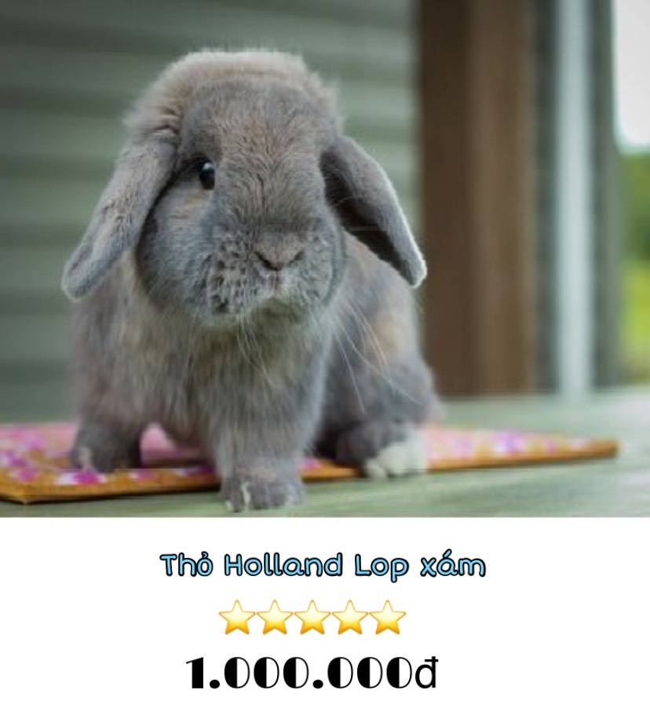
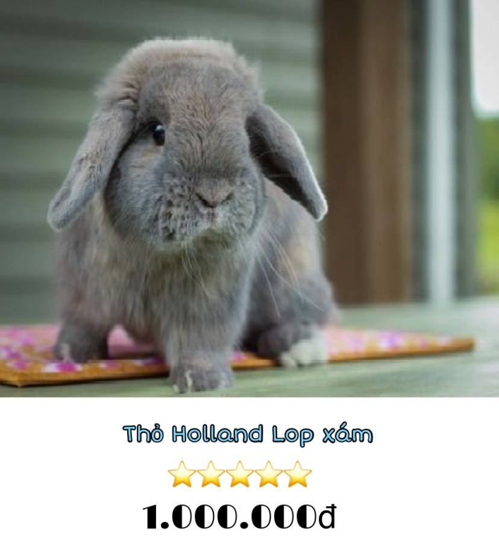

Bên cạnh những chú mèo cảnh, chó cảnh, chuột hamster thì Thỏ Cảnh là một cái tên rất nỗi tiếng trong thế giới thú cưng. Với vẻ ngoài hiền lành, bộ lông dày mịn, nhiều màu sắc, lại còn rất tinh nghịch và hiếu động. Thỏ cảnh từ lâu đã trở thành những người bạn thân thiết với con người. Hãy cùng TATSUSHOP dạo một vòng xem những chú Thỏ đáng yêu thế nào các bạn nhé!
 

Thỏ cảnh là một vật nuôi trong nhà tuyệt vời, chúng đáng yêu và cá tính, tinh nghịch và hòa đồng. Thích hợp cho mọi lứa tuổi, kể cả trẻ em. Nhưng đối với bất kỳ vật nuôi nào, việc mang một chú thỏ về nhà cũng cần có sự chuẩn bị và hiểu biết về chúng. Hãy cùng TATSUSHOP tìm hiểu về loài Thỏ cảnh ngay sau đây nhé các sen!
Những chú thỏ cảnh với nhiều màu sắc, bộ lông siêu mềm mại và vẻ mặt ngây thơ cực đáng yêu sẽ khiến bạn phải "bồ kết" ngay lần gặp gỡ đầu tiên.
Thỏ là loài động vật sạch sẽ, tỉ mỉ và hầu như không có mùi. Bạn sẽ cực kì thoải mái khi nuôi dưỡng một vật nuôi như thế này ở trong nhà.
Không cần nói thêm về sự tinh nghịch và hiếu động của Thỏ cảnh. Người bạn nhỏ này luôn tràn đầy năng lượng, luôn muốn hoạt động cả ngày.
Thỏ cảnh thông mình, hòa đồng và rất thích tiếp xúc với con người. Khi đã thân thiết rồi, chúng sẽ quấn quít với bạn cả ngày giống hệt như một chú cún con.
Thỏ là loài động vật có vú trong họ Leporidae. Thỏ Cảnh hiện nay có nguồn gốc từ thỏ hoang dã ở Châu Âu và Châu Phi. Việc nuôi thỏ làm thú cưng bắt đầu từ những năm 1800.
Thỏ sống trên mặt đất ở các môi trường khác nhau, từ sa mạc tới rừng nhiệt đới, rừng ngập nước. Hiện có hơn 60 giống thỏ nội được công nhận ở Châu Âu và Châu Mỹ, tất cả đều là hậu duệ của thỏ Châu Âu(Oryctolagus cuniculus), loài thỏ duy nhất đã được thuần hóa rộng rãi.
Loài thỏ hoang dã ở Châu Âu phát triển khoảng 4.000 năm trước trên bán đảo Iberia. Khi người La Mã đến Tây Ban Nha vào khoảng năm 200 TCN, họ bắt đầu nuôi những con thỏ bản địa để lấy thịt và lông.
Sự lan rộng của đế chế La Mã, cùng với sự gia tăng thương mại giữa các quốc gia, đã giúp đưa loài thỏ châu Âu vào nhiều khu vực hơn nữa ở châu Âu và châu Á. Với tốc độ sinh sản nhanh chóng và việc trồng trọt ngày càng nhiều cung cấp môi trường sống lý tưởng, thỏ sớm hình thành các quần thể lớn trong tự nhiên.
Những con thỏ hoang dã được cho là thuần hoá lần đầu tiên vào thế kỷ thứ 5 bởi các nhà sư của Vùng Champagne ở Pháp. Các nhà sư là những người đầu tiên nuôi thỏ trong lồng như một nguồn thức ăn dự trữ, và là người đầu tiên thử nghiệm lai tạo chọn lọc các đặc điểm như trọng lượng hoặc màu lông.
Thỏ được du nhập vào Anh thế kỷ 12, và trong thời Trung cổ, việc chăn và nuôi thỏ để lấy thịt, lông đã trở nên phổ biến khắp châu Âu. Các nguồn tin cho rằng một số phụ nữ trong giới quý tộc thời Trung cổ thậm chí còn nuôi thỏ làm thú cưng.
Cho đến thế kỷ 19, thỏ nhà được lai tạo thuần túy để lấy thịt và lông, nhưng trong thời kỳ Victoria, nhiều giống thỏ mới đã được phát triển. Mặc dù nhiều con thỏ trong số này được nuôi để lấy thịt, nhưng việc nuôi thỏ làm vật nuôi ngày càng trở nên phổ biến ở tầng lớp trung lưu ngày.
Trong hai cuộc Thế chiến, chính phủ ở Anh và Mỹ đều khuyến khích người dân nuôi thỏ như một nguồn cung cấp thịt và lông, vừa để phục vụ bản thân, vừa để làm thức ăn, quần áo cho binh lính. Sau chiến tranh, nhiều người tiếp tục nuôi thỏ trong vườn của họ, và chúng trở thành vật nuôi phổ biến trong gia đình. Thỏ cảnh đã trở thành vật nuôi phổ biến thứ ba sau chó và mèo ở Anh.
Thỏ cảnh ngày càng được cưng chiều giống chó và mèo, như một người bạn đồng hành dễ thương, đáng yêu trong gia đình, được cung cấp một chế độ nuôi dưỡng riêng, từ tiêm chủng và chăm sóc sức khỏe định kỳ, cho đến sự tự do và thoải mái tương tác với con người.
Có hơn 30 loài thỏ trên khắp thế giới, và mặc dù sống trong nhiều môi trường khác nhau, nhưng chúng đều có nhiều điểm chung.
Thỏ là loài động vật có vú nhỏ. Chúng có đôi tai dài, dài tới 7,5 cm và đôi chân sau khỏe mạnh. Chúng có kích thước trung bình từ 34 - 50 cm và nặng từ 1 đến 7 kg, tùy thuộc vào giống.
Lông thỏ dài và mềm, có màu xám hoặc nâu, phần dưới bụng có màu trắng và đuôi ngắn. Tuy nhiên, điều này thay đổi tùy thuộc vào loài và giống. Hiện nay đã có rất nhiều loài thỏ cảnh khác nhau được lai tạo ra mang nhiều màu sắc độc đáo.
Đôi tai dài của thỏ có khả năng là một sự thích nghi để phát hiện những kẻ săn mồi. Cơ thể thỏ hình trứng, đuôi ngắn. So với Thỏ cảnh thì Thỏ rừng có tỷ lệ cơ thể và dáng đứng khá đồng đều.
Thỏ có 2 cặp răng cửa, một cặp ở trên và một cặp ở dưới. Chúng cũng có 2 răng chốt phía sau răng cửa trên cùng. Răng của thỏ đặc biệt thích nghi để gặm nhấm và phát triển liên tục trong suốt cuộc đời.
Thỏ sử dụng đôi chân sau mạnh mẽ của mình để di chuyển bằng cách nhảy. Chúng có 4 ngón chân ở bàn chân sau và có màng để giữ cho ngón chân không bị tách ra khi nhảy. Mỗi bàn chân trước của thỏ có 5 ngón. Một số loài thỏ có thể đạt tốc độ 56 - 72 km mỗi giờ. Thỏ con thường bò nhiều hơn nhảy.
Tuổi thọ của Thỏ Cảnh phụ thuộc vào nhiều yếu tố. Giống, di truyền, chế độ ăn uống, giới tính, điều kiện sống và cách chăm sóc. Nhưng trung bình, hầu hết thỏ cảnh sống từ 8 đến 10 năm trong môi trường nuôi nhốt.
Nếu bạn đang có ý định nuôi thỏ làm thú cưng, thì điều quan trọng là phải biết loại môi trường sống mà chúng phát triển. Điều này sẽ cho phép bạn tạo lại môi trường sống cho chúng ở nhà.
Thỏ là loài sống trên mặt đất thích nghi với nhiều môi trường khác nhau. Chúng thích sống ở những nơi có khí hậu ôn hoà. Môi trường sống của chúng khá đa dạng như đồng cỏ, rừng rậm, rừng cây, sa mạc, đất ngập nước và bụi rậm. Đây là những nơi lý tưởng cho thỏ vì chúng cho phép thỏ đào hang, cảm thấy an toàn và được bảo vệ, cũng như cho phép chúng có cơ hội khám phá môi trường xung quanh. Ngoài ra, tất cả những nơi này đều ở ngoài trời và do đó cho phép thỏ có nhiều không gian để chạy.
Trong tự nhiên, thỏ xây dựng hệ thống hang động có những đường hầm nối với nhau. Chia ra những phòng với những chức năng riêng biệt như ngủ hoặc nuôi con. Cửa hang của thỏ rất nhỏ đủ để chúng chui vào, giúp cản trở kẻ săn mồi. Ngoài ra còn có tác dụng điều hoà, giữ nhiệt độ ổn định trong mùa hè và mùa đông. Phần lớn thời gian thỏ ở trong hang và chỉ ra ngoài vào lúc bình minh và hoàng hôn.
Khi nuôi thỏ tại nhà, người nuôi cần mô phỏng các đặc điểm của môi trường tự nhiên giúp thỏ cảm thấy thoải mái nhất, giúp chúng thích nghi tốt hơn.
Thỏ cảnh cần một ngôi nhà an toàn với nhiều không gian cho dù là bạn nuôi trong nhà hay ngoài trời.
Chuồng trong nhà:
Có kích thước gấp ít nhất 4 lần so với thỏ. Tránh làm sàn bằng thép hoặc lưới vì có thể gây tổn thương cho chân thỏ, tốt nhất là sàn nên làm bằng phẳng. Không sử dụng lồng kính hoặc bể cá để làm nhà cho thỏ vì chúng sẽ không cung cấp đủ sự thông thoáng. Trong chuồng cần một khu vực cho khay vệ sinh.
Hiện nay trên thị trường có rất nhiều những mẫu chuồng đẹp dành riêng cho thỏ cảnh. Nhưng bạn hãy nên nhớ, chuồng càng lớn càng tốt cho thỏ cưng.
Chuồng ngoài trời:
Chuồng nên để cách mặt đất khoảng 50 - 70cm. Kích thước khoảng 70 x 80 x 50cm (Rộng x Dài x Cao). Trong chuồng nên có một khu vực làm tổ có lót rơm hoặc cỏ khô để thỏ nghỉ ngơi.
Sàn của lồng nên làm bằng phẳng và chắc chắn để tránh tổn thương chân của thỏ. Chất liệu chuồng phải bền bỉ để có thể chịu được thời tiết và bảo vệ thỏ khỏi nhiệt độ quá nóng hoặc quá lạnh
Nước uống
Dù là chuồng trong nhà hay ngoài trời đều cần chuẩn bị sẵn một chai nước sạch có vòi để thỏ uống bất cứ lúc nào. Khi nuôi thỏ ngoài trời sẽ uống nhiều nước hơn.
Chén ăn hoặc khay đựng cỏ:
Trong chuồng phải có chén ăn hoặc khay để đựng thức ăn cho thỏ, giúp cho chuồng và thức ăn luôn được sạch sẽ.
Hộp vệ sinh:
Những chú thỏ nên được huấn luyện để sử dụng hộp vệ sinh giúp không gian chuồng được sạch sẽ và dễ dàng dọn dẹp.
Đồ chơi & đồ nhai:
Thỏ là những sinh vật hiếu động và thích vui đùa, vì thế hãy chuẩn bị một số đồ chơi trong chuồng của các bé như cầu thang, banh, bánh chạy, ... Ngoài ra cũng nên có sẵn những đồ chơi nhai để giúp thỏ mài răng của chúng.
Để một chú thỏ cưng khoẻ mạnh và phát triển tốt nhất, người nuôi cần đảm bảo cung cấp cho các bé một chế độ ăn đầy đủ chất dinh dưỡng. Bao gồm cỏ khô, cỏ nén, thức ăn viên, trái cây, rau tươi, đồ ăn vặt.
- Cỏ: Cỏ khô cần thiết cho thỏ để giúp ruột hoạt động và mài mòn răng. Bạn có thể cho thỏ ăn bao nhiêu cỏ khô tuỳ thích, một số loại cỏ tốt cho thỏ như: Timothy, Burmuda, yến mạch, ...
- Thức ăn viên: Đồ ăn thương mại có rất nhiều loại. Hãy chọn những loại có khoảng 25% chất xơ và hàm lượng chất béo thấp nhất. Thỏ non nên ăn loại viên nhỏ.
- Rau: Mỗi ngày nên bổ sung cho thỏ cưng một lượng rau xanh nhất định như: cà rốt, bông cải, mùi tây, diếp xoăn, súp lơ, bắp cải, ...
- Nước: So với những loài vật khác, thỏ uống khá nhiều nước nên hãy luôn chuẩn bị sẵn nước ngọt trong chuồng.
Thỏ không có chu kỳ giao phối và không có dấu hiệu sinh sản nào cả. Các bé sẽ đạt tới độ tuổi trưởng thành sinh dục từ 4 - 8 tháng tuổi. Giống thỏ có kích thước càng lớn thì tuổi sinh sản sẽ càng lâu.
Thường thì sẽ khó nhận ra lúc nào thỏ cái sẵn sàng giao phối, nhưng một số bé có thể có những dấu hiệu như cọ xát cằm vào lồng. Khi giao phối nên đưa thỏ cái qua chuồng của thỏ đực. Sau khi xong thì mang thỏ cái về chuồng của mình.